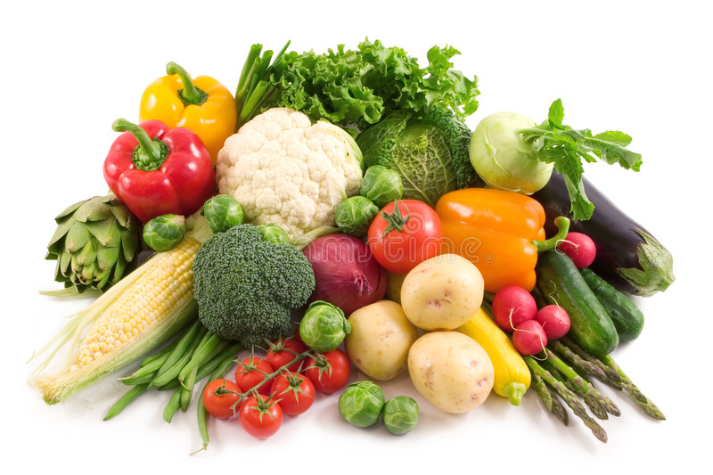

Our Products
1, Fertilizer

Product detail
Fertilizer, natural or artificial substance containing the chemical elements that improve growth and productiveness of plants. Fertilizers enhance the natural fertility of the soil or replace chemical elements taken from the soil by previous crops.They are additional substances supplied to the crops to increase their productivity. These are used by the farmers daily to increase the crop yield. These fertilisers contain essential nutrients required by the plants, including nitrogen, potassium, and phosphorus. They also enhance the water retention capacity of the soil and increase its fertility.
What are the main types of Feritizer products?
There are mainly two types of fertilizer, these are Organic and Inorganic Fertilizer. Mainly our company Focused on the production of inorganic fertilizer but it also produce organic ferilizers.Organic fertilizers are Natural ferilizers they just obtained from plant and animals. They enrich the soil with carbon compounds. In organic Fertilizers are chemical fertilizer helps the plant by giving variety of neutrients.Our company have a plan to combine organic and inorganic ferilizer to get best product.
Product Features
Collection of variety of Fertilizers
Nitrogen fertilizers contain nitrogen necessary for crop growth. Nitrogen is the main component of chlorophyll, which maintains balance during photosynthesis. It is also part of plant amino acids and forms proteins. Nitrogen fertilizers improve the yield and quality of agricultural products.
The main nutrient in a phosphorus fertilizer is phosphorus. The efficiency of fertilizer depends upon effective phosphorus content, methods of fertilizing, properties of soil and crop strains. Phosphorus found in the protoplasm of the cell plays an important role in cell growth and proliferation. The phosphorus fertilizer is beneficial for the growth of roots of the plants.
Compound fertilizers are not always well adapted to different kinds of soils. For that reason mixed fertilizers containing two or more materials in suitable proportions are used according to the needs of different soils. Mixtures usually fulfill the nutrient deficiencies in a more balanced manner and require less labour to apply than different fertilizers used separately.
2, Vegetable
Product detail
vegetables are fresh edible portions of certain herbaceous plants—roots, stems, leaves, flowers, fruit, or seeds. These plant parts are either eaten fresh or prepared in a number of ways, usually as a savory, rather than sweet, dish.
What are the main types of Feritizer products?
Vegetables, like fruits, are low in calories and fats but contain good amounts of vitamins and minerals. All the Green-Yellow-Orange vegetables are rich sources of calcium, magnesium, potassium, iron, beta-carotene, vitamin B-complex, vitamin-C, vitamin-A, and vitamin K. As in fruits, vegetables too are home for many antioxidants.
Product Features
Collection of variety of Vegetable
Cabbage is packed with nutrients and packed with vitamin C. It helps improve digestion May help keep your heart healthy and also May lower blood pressure.
Red peppers are peppers which are sweet-tasting and can be used in cooking and it is a hot-tasting spicy powder made from the flesh and seeds of small, dried, red peppers. It is used for flavouring food.
Tomatoes are most common vegetable in ethiopia and it is is a juicy fruit that's usually red, and grows on a vine or shrub. It's considered a fruit because it has seeds and develops from the ovary, or female reproductive organ, of the plant.
3, Fruits

Product detail
A fruit is a mature, ripened ovary, along with the contents of the ovary. The ovary is the ovule-bearing reproductive structure in the plant flower. a fruit is the seed-bearing structure in flowering plants that is formed from the ovary after flowering.The outer layer, often edible, of most fruits is called the pericarp. Typically formed from the ovary, it surrounds the seeds; in some species, however, other structural tissues contribute to or form the edible portion.One of the main functions of a fruit is to spread the seeds and allow the plant to reproduce. Therefore, all flowering plants produce fruit, regardless of whether the fruit is edible, sweet, or soft.
What are the main types of Feritizer products?
Quality factors for fruits include the following maturity, firmness, the uniformity of size and shape, the absence of defects, skin and flesh color. Many of the same quality factors are described for vegetables, with the addition of texture-related attributes such as turgidity, toughness, and tenderness. A diet rich in vegetables and fruits can lower blood pressure, reduce the risk of heart disease and stroke, prevent some types of cancer, lower risk of eye and digestive problems, and have a positive effect upon blood sugar, which can help keep appetite in check.
Product Characterstics
Collection of variety of Fruits
Bananas are one of the most popular fruits worldwide. They contain essential nutrients that can have a protective impact on health.Banana are incredibly healthy, convenient, delicious, and one of the most inexpensive fresh fruits you can buy. This makes them an excellent choice for anyone interested in eating healthy.
Member of the cashew family (Anacardiaceae) and one of the most important and widely cultivated fruits of the tropical world. The mango tree is considered Main fruit in ethiopia, especially Myanmar and Assam state of India, and numerous cultivars have been developed. Mangoes are a rich source of vitamins A, C, and D.
flesh with a buttery consistency and a rich nutty flavour. They are often eaten in salads, and in many parts of the world they are eaten as a dessert.They're rich in nutrients that are often lacking in many people diets, including magnesium, B6, vitamin C, vitamin E